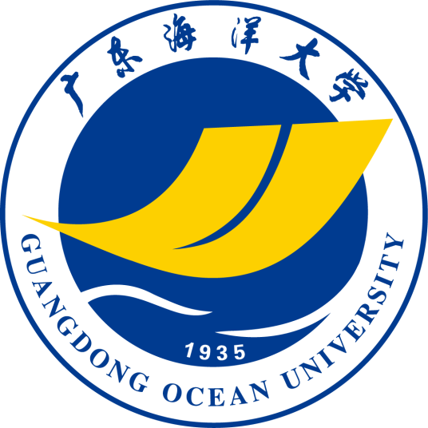

|  |
中国广东省湛江市境内公办高校Guangdong Ocean University |
广东海洋大学（Guangdong Ocean University），坐落于广东省湛江市，是国家海洋局与广东省人民政府共建的省属重点建设大学、广东省高水平大学重点学科建设高校、粤港澳高校联盟成员 ，入选卓越农林人才教育培养计划，是教育部本科教学水平评估优秀院校。
学校的前身是创建于1935年的广东省立高级水产职业学校。1997年1月10日，湛江水产学院和湛江农业专科学校合并组建湛江海洋大学。2001年12月，全国重点中专湛江气象学校并入。2005年6月15日，经教育部批准，湛江海洋大学更名为广东海洋大学。
截至2022年9月，学校有湖光校区（校本部）、霞山校区、海滨校区三个校区总面积4892亩，校舍总建筑面积80.37万平方米，图书馆藏书392万册，教学科研设备值5.51亿元，固定资产值20.68亿元；学校设有19个学院，开设83个本科专业，39个高职高专专业；拥有3个一级学科博士点、11个一级学科硕士点、12个硕士专业学位类别；有全日制本科生、研究生、留学生3.8万人，成人高等教育学生1.2万人；有教职工2343人，其中专任教师1688人。
目录 |
| 中文名 | 广东海洋大学 | 校 训 | 广学明德，海纳厚为 |
| 外文名 | Guangdong Ocean University | 校 歌 | 《蔚蓝之歌》 |
| 简称 | 广海，广东海大（GDOU） | 校庆日 | 11月26日 |
| 创办时间 | 1935年 | 地 址 | 湖光校区（校本部）：广东省湛江市麻章区海大路1号 霞山校区：广东省湛江市霞山区解放东路40号 海滨校区：广东省湛江市湛江经济技术开发区海滨大道43号 阳江校区：广东省阳江市江城区罗琴路1号 |
| 办学性质 | 公立大学 | ||
| 别学校类 | 农林类 | ||
| 学校特色 | 省部共建大学 | ||
| 主管部门 | 广东省 | ||
| 现任领导 | 杨洲(党委书记)、潘新祥(校长) | 院校代码 | 10566 |
| 本科专业 | 83个 | 主要奖项 | 国家级二等奖 广东省科学技术奖一等奖广东省科学技术奖二等奖 |
| 硕士点 | 学术学位授权一级学科11个 专业学位授权类别12个 | ||
| 博士点 | 学术学位授权一级学科3个 | 知名校友 | 吴壮、吴仰儒等 |
| 院系设置 | 19个学院 | 占地面积 | 4892 亩 |
1936年，广东汕头水产职业学校创建。
1936年，广东汕头高级水产职业学校改名为广东省立高级水产职业学校。
1939年，日军攻占汕头，学校停办。
1945年，广东省立汕头高级水产职业学校复校并改名为广东省立汕尾高级水产职业学校。
1950年，改名为广东省立高级水产技术学校。
1952年，改名为广东省水产技术学校。
1953年，广东省水产技术学校轮机专业并入长江航务学校，后发展为武汉河运专科学校、武汉交通科技大学，武汉理工大学等。
1953年，广东省水产技术学校、长江航务学校部分部分校区、广西钦州农业学校的水产科、海口高级农业技术学校的水产科合并组建广东省水产学校。
1956年，广东省水产学校改名为广东水产学校。
1960年，广东水产学校升格为广东水产专科学校。
1960年，暨南大学的水产系，并入广东水产学校。
1958年，华南工学院（湛江分院）创建。
1962年，华南工学院的湛江分院，并入广东水产专科学校。
1963年，广东水产专科学校更名为湛江水产专科学校。
1966年，文革爆发，学校撤销。
1979年，湛江水产专科学校复校并升格为湛江水产学院。
1958年，湛江气象学校创建。
1966年，湛江气象学校撤销，湛江气象学校一部分，并入成都气象学校。
1979年，湛江气象学校复校。
1956年，广东省湛江农业学校成立。
1958年，湛江湖光岩成立；同年，广东省湛江农业学校并入；同年，华南农学院合浦分院成立。
1959年，华南农学院合浦分院。
1963年，更名为华南农学院湛江分院。
1965年，更名为湖光劳动大学。
1972年，更名为湛江地区农业学校。
1976年，更名为湛江地区五·七农业大学。
1978年，更名为湛江农学院。
1980年，更名为湛江农业专科学校。
1997年，湛江水产学院、湛江农业专科学校合并并改名为湛江海洋大学。
2001年12月，湛江气象学校并入湛江海洋大学。
2002年，广东气象学校并入湛江海洋大学。
2005年，湛江海洋大学改名为广东海洋大学。
2010年6月，广东省与国家海洋局共建广东海洋大学。
2013年8月，广东海洋大学正式获批为博士学位授予单位 。
2018年11月，入选广东省新一轮高水平大学建设计划中的“高水平大学重点学科建设高校”。
2020年9月29日，成为全国高校海洋类学术期刊联盟理事单位。
2021年1月4日，广东海洋大学阳江校区正式成立 ；3月，协同共建国家耐盐碱水稻技术创新中心。
2022年8月，广东海洋大学2个科技小院获国家支持建设。
2022年10月21日，广东海洋大学湖光校区第二实验综合楼工程开工。
截至2022年9月，学校设有19个学院，开设83个本科专业。
| 学院 | 本科专业 |
|---|---|
| 广东海洋大学水产学院 | 水产养殖学、海洋渔业科学与技术、水生动物医学、生物科学 |
| 广东海洋大学海洋与气象学院 | 海洋科学（物理海洋、海洋化学和海洋地质专业方向）、大气科学（天气动力、海洋气象和气候变化专业方向）、应用气象学（应急减灾、雷电防护专业方向） |
| 广东海洋大学海洋工程学院 | 工程管理、港口航道与海岸工程、船舶与海洋工程 |
| 广东海洋大学海运学院（船员培训中心挂靠） | 航海技术、轮机工程（海上和陆上方向）、船舶电子电气工程、交通运输 |
| 广东海洋大学数学与计算机学院（软件学院） | 计算机科学与技术、信息与计算科学、数据科学与大数据技术、软件工程、信息管理与信息系统、物联网工程 |
| 广东海洋大学文学与新闻传播学院 | 汉语言文学、汉语国际教育、秘书学、新闻学、编辑出版学 |
| 广东海洋大学外国语学院 | 英语、日语 |
| 广东海洋大学化学与环境学院 | 应用化学、农业资源与环境、海洋资源与环境、制药工程、环境科学 |
| 广东海洋大学中歌艺术学院 | 舞蹈编导（舞蹈编导、民族民间舞、舞蹈教育、国际标准舞、艺术模特等方向）、音乐学（声乐、音乐教育、器乐等方向）、视觉传达设计、环境设计、服装与服饰设计、美术学、表演、播音与主持艺术、产品设计 |
| 广东海洋大学机械与动力工程学院 | 机械设计制造及其自动化、机械电子工程、材料成型及控制工程、工业工程、能源与动力工程、建筑环境与能源应用工程、工业设计 |
| 广东海洋大学食品科技学院 | 食品科学与工程、食品质量与安全、生物工程 |
| 广东海洋大学滨海农业学院 | 动物科学、动物医学、林学、农学、生物技术、园林、园艺、植物保护 |
| 广东海洋大学经济学院 | 经济学、国际经济与贸易、经济与金融 |
| 广东海洋大学电子与信息工程学院 | 海洋技术、电子信息工程、电子科学与技术、自动化、电气工程及其自动化、通信工程 |
| 广东海洋大学管理学院 | 土地资源管理、旅游管理、行政管理、公共事业管理、财务管理、会计学、工商管理 |
| 广东海洋大学法政学院 | 法学、政治学与行政学、社会学 |
| 广东海洋大学马克思主义学院 | |
| 广东海洋大学体育与休闲学院 | 社会体育指导与管理、休闲体育 |
| 广东海洋大学继续教育学院 |
截至2022年9月，学校有教职工2343人，其中专任教师1688人、副高以上职称人员677人、博士学位者648人；博士生导师95人、硕士生导师388人；特聘院士2人； “十三五”国家重点研发计划首席科学家1人；双聘院士、入选青年珠江学者、“扬帆计划”科技创新领军人才、广东省高等学校“千百十工程”国家级培养对象等共8人，省级培养对象14人；现有15人入选广东省高等学校优秀青年教师培养对象、17人入选广东省“扬帆计划”高层次人才培养对象，15个省级教学团队、9个省级高层次研究团队、11名省部级教学名师、1名全国气象教学名师、7名教育部高等学校教学指导委员会委员、34名广东省高等学校本科教学指导委员会委员。
截至2022年9月，学校有3个一级学科博士点；11个一级学科硕士点，12个硕士专业学位类别。拥有5个广东省高水平大学重点建设学科，6个省级重点学科，其中水产一级学科、水产品加工及贮藏工程二级学科被列为“攀峰重点学科”，海洋科学一级学科被列为“优势重点学科”，机械制造及其自动化、动物遗传育种与繁殖、农业经济管理3个二级学科被列为“特色重点学科”。“水产”“海洋科学”和“食品科学与工程”3个博士授权一级学科在全国第四轮学科评估中，分别为B-、C+、B-；植物学与动物学学科进入ESI全球前1%。
一级学科博士点： 水产、食品科学与工程、海洋科学
一级学科硕士点：水产、食品科学与工程、海洋科学、作物学、畜牧学、计算机科学与技术、应用经济学、机械工程、工商管理、马克思主义理论、船舶与海洋工程
硕士专业授权类别：农业、生物与医药、机械、艺术、法律、风景园林、电子信息、资源与环境、土木水利、交通运输、兽医、公共管理 [55]
广东省高水平大学重点建设学科：水产、海洋科学、食品科学与工程、船舶与海洋工程、作物学
广东攀峰重点学科：水产、水产品加工及贮藏工程
广东优势重点学科：海洋科学、动物遗传育种与繁殖、机械制造及其自动化、农业经济管理
截至2022年4月，学校有7个国家级一流本科专业建设点、5个国家级特色专业、1个国家级综合改革试点专业；13个省级一流本科专业建设点、28个省级以上优势特色专业。
国家级实验教学示范中心：水产科学与技术实验教学中心
国家级特色专业：水产养殖、海洋渔业科学与技术、动物科学、食品科学与工程、食品质量与安全
广东省高校名牌专业：水产养殖、食品科学与工程
广东省重点专业：食品科学与工程
省级特色专业：海洋科学（海洋生物）、海洋科学等
省级精品课程：海洋经济学、动物繁殖学、食品微生物学、鱼类增养殖学、水产食品加工学、传热传质学、金工实习等
省级实验教学示范中心：航海技能训练中心、水产科学与技术实验教学示范中心、海洋食品学实验教学示范中心、工程训练中心等
截至2022年4月，学校先后与美国、日本、韩国、英国、澳大利亚等国家以及香港、台湾等地区50多所高校、研究机构建立了良好的学术交流、人才培养、科学研究等多层次、多领域合作关系 。